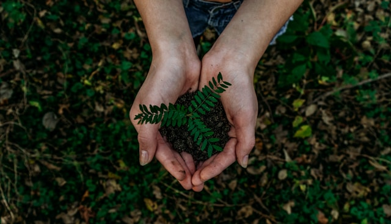

Bem-vindo ao Instituto Raízes
Onde plantamos raízes, a vida floresce.
Quem somos
O Instituto Raízes nasceu do desejo de um grupo de voluntários apaixonados pelo meio ambiente, unidos pela vontade de transformar áreas degradadas em espaços de vida novamente. Ao longo dos anos, contamos com o apoio de doadores, empresas parceiras e centenas de voluntários que acreditam que pequenas ações, quando somadas, geram grandes mudanças. Mais do que uma organização, somos uma rede de pessoas comprometidas com um futuro mais verde para as próximas gerações.
Nossa missão
O Instituto Raízes atua no reflorestamento de áreas devastadas por desmatamento e queimadas, promovendo a preservação e conservação do meio ambiente por meio do uso sustentável dos recursos naturais. Nosso trabalho é mantido por doações e campanhas de arrecadação, permitindo que sigamos ativos na luta pela recuperação ambiental. Mais do que plantar árvores, cuidamos de todo o ecossistema que se desenvolve ao redor delas.

Como você pode ajudar
Você pode fazer parte dessa transformação de diversas formas: seja como voluntário em nossas ações de plantio, doando recursos para sustentar nossos projetos, ou simplesmente espalhando nossa causa. Cada gesto conta na construção de um futuro mais sustentável.